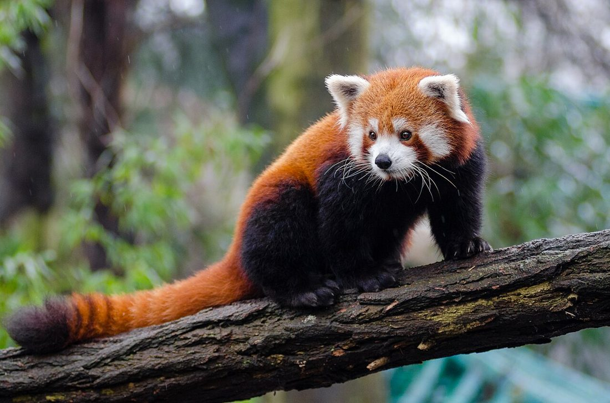

1/20
猜猜看
我是誰？
我是誰？
一次打開一個提示
先讓大家說說看：牠長什麼樣子？像哪一種你認識的動物？
鍵盤：空白鍵 下一個提示 Enter 揭曉 → 下一隻 C 換照片
看照片，一個一個打開提示，大家一起猜這隻少見動物。猜到後看知識卡、聽真實叫聲、看影片。

「模糊」和「局部放大」每打開一個提示，照片就清楚一點、看到多一點。
一堂課玩 6–8 隻剛好，留時間聊天；40 種可以分好幾堂課玩。
先讓大家說說看：牠長什麼樣子？像哪一種你認識的動物？
鍵盤：空白鍵 下一個提示 Enter 揭曉 → 下一隻 C 換照片
點一隻動物，就從牠開始猜。圓圈裡是 IUCN 紅色名錄等級（CR 極危、EN 瀕危、VU 易危、NT 近危、LC 無危）。
有，而且有好幾個可以免費聽。鳥類最齊全的是 xeno-canto，現在也收青蛙、蝗蟲、蝙蝠和陸地哺乳動物；最大、最專業的是康乃爾大學的 麥考利圖書館；德國柏林自然史博物館的 Tierstimmenarchiv 有很多哺乳動物的老錄音；BBC 音效庫 和 維基共享資源 也找得到一些。不過很多少見動物本來就很少叫（例如穿山甲、美西螈），所以不是每一種都有錄音。本網頁 40 種動物裡，有 14 種放了可以直接播放的真實錄音（其中水鹿、長鬃山羊、黃喉貂、白鼻心是在台灣山區錄的）；沒有錄音的，我們就照實說明牠會發出什麼聲音，並附上搜尋連結。
荷蘭基金會經營，全世界的人上傳野外錄音，每一筆都有錄音者、地點和 CC 授權。以鳥為主，也有蛙、蝗蟲、蝙蝠和陸地哺乳動物。標註來源、非商業使用即可放在教學網頁。
xeno-canto ↗德國柏林自然史博物館的「動物聲音檔案館」，收藏十幾萬筆動物錄音，很多是動物園裡錄的哺乳動物聲音，可以用學名搜尋。網站以德文和英文為主。
Tierstimmenarchiv ↗英國 BBC 開放的音效庫，有不少動物聲音。採 RemArc 授權：個人、教學、研究用途可以使用，商業用途要另外購買。上課時直接在網站上播放最簡單。
BBC 音效庫 ↗沒有開放錄音的動物，常常可以在動物園或保育單位拍的影片裡聽到聲音，例如台北動物園拍的馬來貘叫聲。本頁揭曉答案後，有些動物會附上「聽聲音」的影片。
標示 ND（禁止改作）的錄音保持原檔未修改；其他錄音只調整音量或轉成 mp3。
照片都來自維基共享資源（Wikimedia Commons），依各自授權標示作者；網頁上是縮小後的版本。
中文名以台灣常用名稱為主。保育等級：國際為 IUCN 紅色名錄，台灣為農業部公告的保育類野生動物名錄，如有更新以官方公告為準。體型、數量為大約數字，方便口頭比較。影片皆連到 YouTube 原頻道，版權屬原作者。